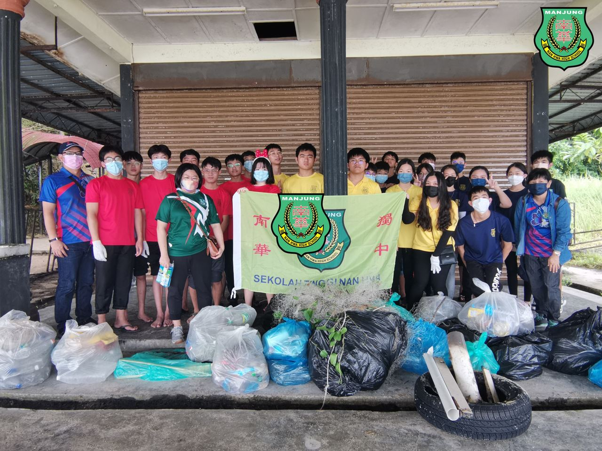
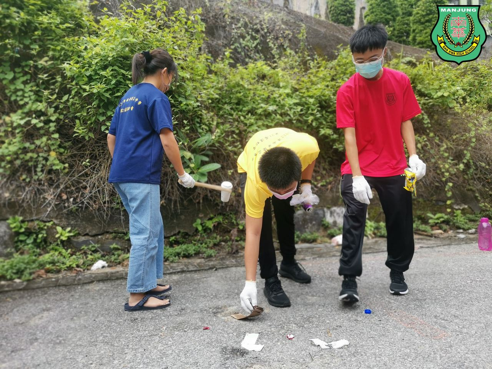
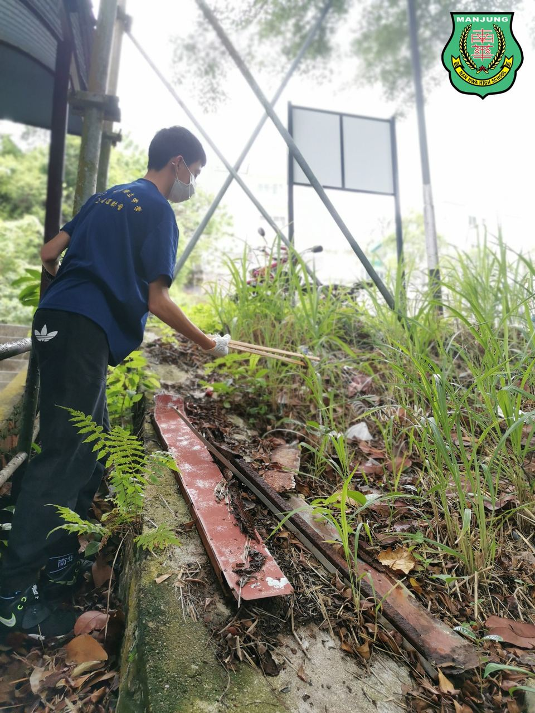
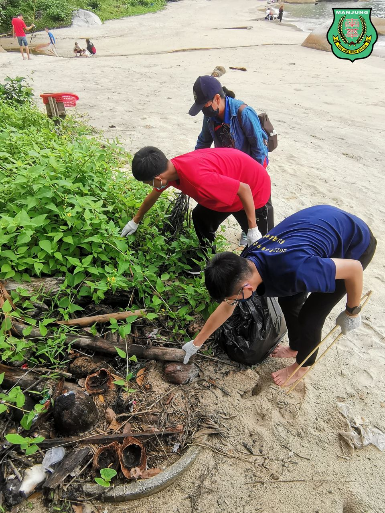
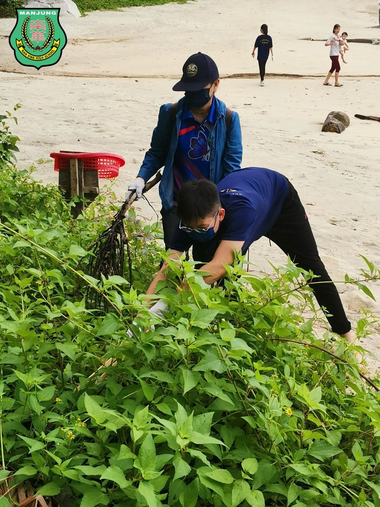
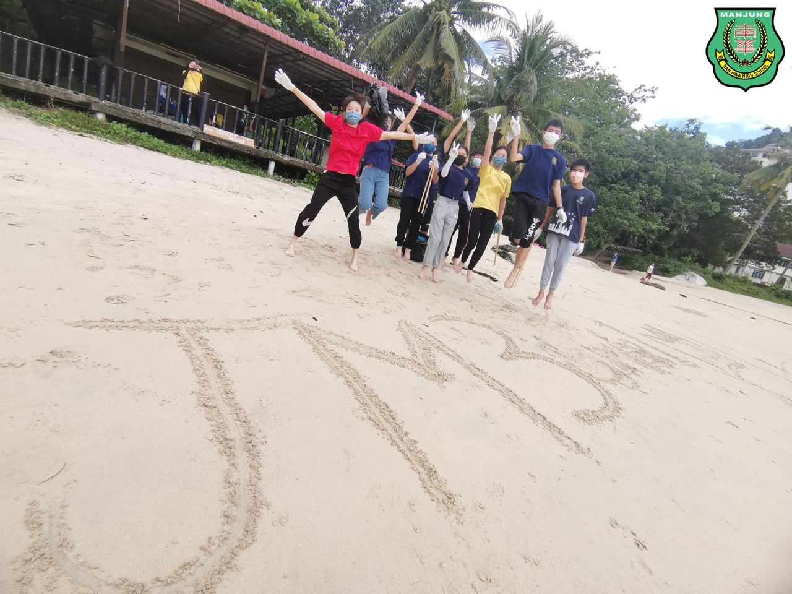
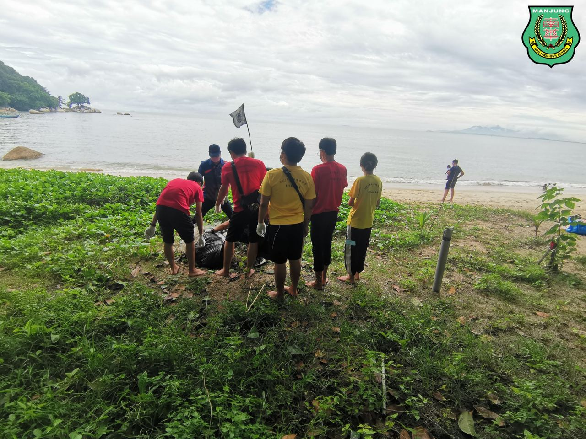
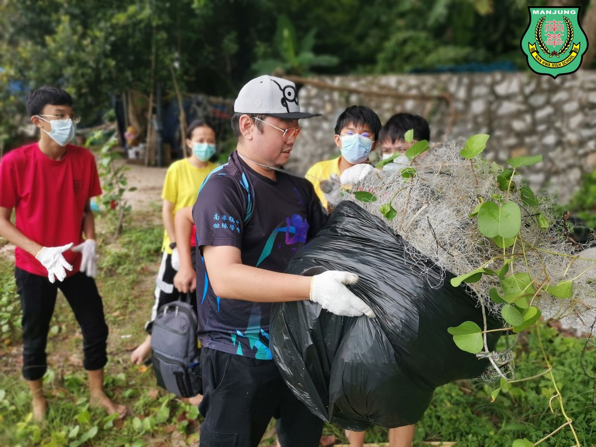

环境教育课程之槟城生态与文化之旅 Day ②
环境教育课程之槟城生态与文化之旅 Day ②
首日参观升旗山生态公园后，师生们对于“维护环境有助于生态平衡”有了更深的认识，于是透过隔日于月光海湾（Moonligh Bay）的“净滩行动“，贯彻环境保护的理念，阻止废弃物流入海洋，为守护马来西亚自然生态出一份力。
第一阶段，学生们分成四组，穿梭在沙滩四周，除了将目之所及的大件垃圾拾起，更是把隐藏在草丛中的废弃物翻找出来，装进垃圾袋，带回凉亭。第二阶段则是变废为宝，学生在老师的带领下进行垃圾分类与回收，并装进由马来西亚政府所规定的不同颜色的垃圾袋中。
参与“净滩活动“的廖祖靖同学在受访中表示，乍看下清洁的沙滩，其实处处充斥的人造废弃物，尤其是不可被大自然分解的塑料瓶和保丽龙占大多数。
吴敬铭同学则表示，原来净滩是一件苦差，可是经过大家齐心协力，将沙滩还原成它本来美丽的面貌时，顿时成就感满满。来日如果还有类似的活动，仍然愿意参加。
#净滩活动 #MoonlightBay #变废为宝
#回收 #分类 #南华独中 #曼绒 #实兆远







